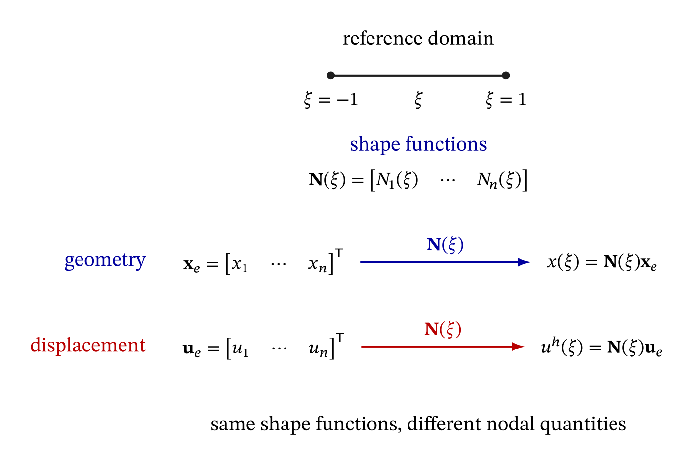

17 The isoparametric formulation in one dimension
The preceding chapters introduced several ideas that now work together in a finite element calculation.
In Chapter 13, Gauss–Legendre quadrature was defined on the standard interval
\[ -1\leq\xi\leq1. \]
In Chapter 14, an exact coordinate transformation was used to relate this standard interval to a physical interval. For a two-node bar element, this gave the mapping
\[ x=x(\xi), \]
the Jacobian
\[ J=\frac{dx}{d\xi}, \]
the differential transformation
\[ dx=J\,d\xi, \]
and the derivative transformation
\[ \frac{d}{dx} = \frac{1}{J}\frac{d}{d\xi}. \]
Finally, Chapter 15 combined these operations to evaluate the stiffness matrix and consistent distributed-load vector of the two-node bar on the standard interval.
We can now step back from those individual operations and recognize the more general finite element construction that connects them. This construction is called the isoparametric formulation.
The central idea is simple: the same shape functions defined on a reference domain are used to interpolate both the geometry of the physical element and the primary unknown field. The coordinate mapping, its Jacobian, the transformation of derivatives, and the element integrals then follow from this common description.
The two-node bar considered so far already has this isoparametric structure. In this chapter, we make that structure explicit and generalize it to a one-dimensional element with \(n\) nodes. We will distinguish between interpolation of the displacement field, interpolation of the geometry, and numerical integration, and we will show how these operations are connected through the Jacobian of the coordinate mapping.
The two-node bar remains the main concrete example. Higher-order interpolation is introduced only to examine an important feature of the geometry mapping: while the two-node mapping is affine and has a constant Jacobian, a higher-order mapping can be non-affine and have a Jacobian that varies within the element. This also provides a natural setting in which to discuss the validity of the coordinate mapping.
The full development of the three-node quadratic bar is deferred to the next chapter. There we will construct its quadratic shape functions systematically and use the isoparametric framework developed here to derive its finite element equations.
17.1 Interpolation, mapping, and numerical integration
Three operations that appear together in an element calculation should first be kept conceptually distinct.
The global finite element displacement field is represented within each element through interpolation of the nodal displacement values:
\[ u^h\!\left(x(\xi)\right) = \mathbf{N}(\xi)\mathbf{u}_e. \]
When working within an element, we will often write \(u^h(\xi)\) as a shorthand for \(u^h\!\left(x(\xi)\right)\).
Here, \(\mathbf{u}_e\) collects the global nodal displacement values associated with the nodes of element \(e\). Neighboring elements therefore do not define independent displacement fields: they provide local representations of the same global finite element field and share the displacement values at common nodes.
The physical position is obtained through a coordinate mapping:
\[ x(\xi) = \mathbf{N}(\xi)\mathbf{x}_e. \]
An integral on the standard interval may then be evaluated by numerical integration:
\[ \int_{-1}^{1}h(\xi)\,d\xi \approx \sum_{g=1}^{n_g}w_g h(\xi_g). \]
These three operations interact, but they have different purposes:
- interpolation constructs an approximate field from nodal values;
- the coordinate mapping describes the physical element from nodal coordinates;
- numerical integration approximates an integral using a finite set of integration points and weights.
The isoparametric formulation defines how the geometry and displacement field are represented. The resulting element integrals may then be evaluated analytically or numerically, for example using Gauss–Legendre quadrature.
The distinction established previously between an exact coordinate transformation and numerical quadrature therefore remains unchanged. The mapping and the transformations derived from it are exact for the geometry represented by the finite element. Approximation by quadrature enters only when an integral is replaced by a finite weighted sum.
17.2 The familiar two-node element revisited
Consider a two-node element occupying the physical interval
\[ x_1 \leq x \leq x_2. \]
To describe this element in standard coordinates, we introduce the reference interval
\[ -1 \leq \xi \leq 1, \]
with the two local nodes located at
\[ \xi_1=-1, \qquad \xi_2=1. \]
The coordinate mapping relates each point \(\xi\) in the reference interval to the corresponding physical position \(x\) in the element.
The two-node shape functions on the reference interval are
\[ N_1(\xi) = \frac{1-\xi}{2}, \qquad N_2(\xi) = \frac{1+\xi}{2}. \]
Using these shape functions, the displacement field within the element is interpolated from the nodal displacements as
\[ \boxed{ u^h(\xi) = N_1(\xi)u_1 + N_2(\xi)u_2. } \]
The same shape functions are also used to map the reference coordinate \(\xi\) to the physical position \(x\):
\[ \boxed{ x(\xi) = N_1(\xi)x_1 + N_2(\xi)x_2. } \]
The two expressions therefore have the same interpolation structure. In the first, the shape functions interpolate the nodal displacement values \(u_1\) and \(u_2\); in the second, they interpolate the nodal coordinates \(x_1\) and \(x_2\).
Using the same shape functions to represent both the geometry and the displacement field is the essential idea of the isoparametric formulation. The two-node bar introduced earlier already has this structure, even though we had not yet identified it explicitly as isoparametric.
17.2.1 The same interpolation viewed in different coordinates
The connection can also be seen by starting with the familiar two-node shape functions written directly in the physical coordinate. For an element with \(x_2>x_1\),
\[ N_1(x) = \frac{x_2-x}{x_2-x_1}, \qquad N_2(x) = \frac{x-x_1}{x_2-x_1}. \]
The exact affine mapping established in Chapter 14 is
\[ x(\xi) = \frac{x_1+x_2}{2} + \frac{x_2-x_1}{2}\xi. \]
Substituting this expression for \(x\) into the first physical-coordinate shape function gives
\[ \begin{aligned} N_1(x(\xi)) &= \frac{ x_2- \left[ \dfrac{x_1+x_2}{2} + \dfrac{x_2-x_1}{2}\xi \right] } {x_2-x_1} \\[2mm] &= \frac{1-\xi}{2}. \end{aligned} \]
Similarly,
\[ N_2(x(\xi)) = \frac{1+\xi}{2}. \]
Thus the shape functions expressed in terms of the reference coordinate are not unrelated new functions. They describe the same nodal interpolation after the coordinate change.
The advantage of the reference-domain description becomes much greater for higher-order and multidimensional elements: instead of deriving a new set of shape functions directly in physical coordinates for every element geometry, we define the interpolation once on a simple reference domain and use a mapping to describe each physical element.
17.3 Nodal interpolation and Lagrange shape functions
The shape functions used so far have the nodal interpolation property
\[ \boxed{ N_i(\xi_j)=\delta_{ij}, } \]
where the Kronecker delta is
\[ \delta_{ij} = \begin{cases} 1, & i=j,\\ 0, & i\neq j. \end{cases} \]
For example,
\[ N_1(-1)=1, \qquad N_1(1)=0, \]
and
\[ N_2(-1)=0, \qquad N_2(1)=1. \]
Each shape function therefore takes the value one at its own node and zero at the other node.
Polynomial interpolation functions constructed to satisfy this nodal property are Lagrange interpolation functions. The two shape functions already used for the linear bar are the degree-one Lagrange shape functions associated with the two reference nodes \(\xi=-1\) and \(\xi=1\).
The terms Lagrange and isoparametric describe different aspects of the formulation:
- Lagrange interpolation concerns the construction and nodal interpolation property of the shape functions;
- Isoparametric formulation concerns how those shape functions are used: the same interpolation functions describe both the element geometry and the primary unknown field.
Higher-order Lagrange shape functions will be constructed explicitly when the three-node quadratic bar element is introduced.
17.4 The isoparametric concept
Consider a one-dimensional reference domain with \(n\) local nodes located at
\[ \xi_1,\xi_2,\ldots,\xi_n. \]
Let
\[ \mathbf{N}(\xi) = \begin{bmatrix} N_1(\xi) & N_2(\xi) & \cdots & N_n(\xi) \end{bmatrix} \]
collect the shape functions defined on this reference domain.
The physical nodal coordinates are collected in
\[ \mathbf{x}_e = \begin{bmatrix} x_1\\ x_2\\ \vdots\\ x_n \end{bmatrix}, \]
while the nodal displacement values are
\[ \mathbf{u}_e = \begin{bmatrix} u_1\\ u_2\\ \vdots\\ u_n \end{bmatrix}. \]
The geometry is interpolated as
\[ \boxed{ x(\xi) = \mathbf{N}(\xi)\mathbf{x}_e = \sum_{i=1}^{n}N_i(\xi)x_i, } \]
and the displacement field is interpolated as
\[ \boxed{ u^h(\xi) = \mathbf{N}(\xi)\mathbf{u}_e = \sum_{i=1}^{n}N_i(\xi)u_i. } \]
A finite element formulation is isoparametric when the same shape functions, defined on the reference domain, are used to interpolate both the element geometry and the primary unknown field.
For the one-dimensional bar considered here, the same \(N_i(\xi)\) interpolate the physical coordinate \(x\) from the nodal coordinates \(x_i\) and the displacement \(u^h\) from the nodal displacements \(u_i\).
The two interpolations therefore have the same mathematical structure but act on different nodal quantities. This common structure is illustrated in Figure 17.1.

17.5 The reference-to-physical map
The expression
\[ x(\xi) = \mathbf{N}(\xi)\mathbf{x}_e \]
should be understood as a map from the reference domain to the physical element:
\[ \boxed{ [-1,1] \longrightarrow \Omega_e. } \]
A position \(\xi\) in the reference domain determines a physical position
\[ x=x(\xi) \]
through the nodal coordinates and the shape functions defined on the reference domain.
For a valid one-dimensional element, the mapping must describe the physical element without collapsing or folding it. In particular, distinct positions in the reference domain should correspond to distinct physical positions.
For the two-node element with \(x_2>x_1\), the mapping is
\[ x(\xi) = \frac{x_1+x_2}{2} + \frac{x_2-x_1}{2}\xi, \]
which is one-to-one and preserves the ordering of points:
\[ \xi_a<\xi_b \quad\Longrightarrow\quad x(\xi_a)<x(\xi_b). \]
This familiar affine case is the simplest example of the more general isoparametric mapping.
17.6 The Jacobian follows from the geometry
The geometry of the element is described by the interpolation
\[ x(\xi) = \sum_{i=1}^{n} N_i(\xi)\,x_i. \]
Differentiating this mapping with respect to the reference coordinate gives
\[ \frac{dx}{d\xi} = \sum_{i=1}^{n} \frac{dN_i}{d\xi}\,x_i, \]
which, as introduced in Chapter 14, is precisely the Jacobian of the one-dimensional mapping:
\[ J(\xi) = \frac{dx}{d\xi} = \sum_{i=1}^{n} \frac{dN_i}{d\xi}\,x_i, \]
or, in matrix form,
\[ \boxed{ J(\xi) = \frac{d\mathbf{N}}{d\xi}\,\mathbf{x}_e. } \]
The Jacobian is thus fixed entirely by two ingredients: the shape functions used to interpolate the geometry, and the physical nodal coordinates.
For the two-node element the shape-function derivatives are constant,
\[ \frac{d\mathbf{N}}{d\xi} = \begin{bmatrix} -1/2 & 1/2 \end{bmatrix}, \]
and substituting into the expression of the Jacobian gives
\[ \begin{aligned} J &= \begin{bmatrix} -1/2 & 1/2 \end{bmatrix} \begin{bmatrix} x_1 \\ x_2 \end{bmatrix} \\[1mm] &= \frac{x_2 - x_1}{2} = \frac{L_e}{2}. \end{aligned} \]
Because the geometry interpolation is linear in \(\xi\), the coordinate mapping is affine. Its derivative, and therefore the Jacobian, is constant over the element:
\[ J=\frac{L_e}{2}. \]
The general isoparametric expression therefore recovers the result obtained earlier for the affine two-node mapping.
17.7 Transforming derivatives through the mapping
The derivative transformation used in the preceding chapters can now be derived directly from the isoparametric mapping.
Consider a scalar field written in physical coordinates as
\[ u=u(x). \]
Because
\[ x=x(\xi), \]
the same field can be viewed as the composition
\[ u=u(x(\xi)). \]
Differentiating with respect to \(\xi\) and applying the chain rule gives
\[ \frac{du}{d\xi} = \frac{du}{dx} \frac{dx}{d\xi}. \]
Since
\[ J=\frac{dx}{d\xi}, \]
we obtain
\[ \frac{du}{d\xi} = J\frac{du}{dx}. \]
Provided that \(J\neq0\),
\[ \boxed{ \frac{du}{dx} = \frac{1}{J} \frac{du}{d\xi}. } \]
Equivalently,
\[ \boxed{ \frac{d}{dx} = \frac{1}{J} \frac{d}{d\xi}. } \]
This relation is not an additional approximation. It follows exactly from the coordinate mapping and the chain rule.
17.7.1 Derivatives of the shape functions
Within an element, the finite element displacement field can be represented in terms of the reference coordinate as
\[ u^h\!\left(x(\xi)\right) = \mathbf{N}(\xi)\mathbf{u}_e. \]
Differentiating this representation with respect to \(\xi\) gives
\[ \frac{d u^h(x(\xi))}{d\xi} = \frac{d\mathbf{N}}{d\xi}\mathbf{u}_e. \]
The axial strain, however, is defined in terms of the derivative with respect to the physical coordinate \(x\) as
\[ \varepsilon^h(x) = \frac{du^h}{dx}. \]
Using the chain rule,
\[ \frac{d u^h(x(\xi))}{d\xi} = \frac{du^h}{dx} \frac{dx}{d\xi} = J(\xi)\frac{du^h}{dx}. \]
Therefore, equating the two expressions for the derivative with respect to \(\xi\) gives
\[ \frac{du^h}{dx} = \frac{1}{J(\xi)} \frac{d\mathbf{N}}{d\xi}\mathbf{u}_e. \]
The derivatives of the shape functions with respect to the physical coordinate are therefore obtained from their derivatives on the reference domain through the Jacobian. Defining the strain–displacement matrix as
\[ \boxed{ \mathbf{B}(\xi) = \frac{1}{J(\xi)} \frac{d\mathbf{N}}{d\xi}, } \]
the physical strain field can be evaluated in terms of the reference coordinate as
\[ \boxed{ \varepsilon^h\!\left(x(\xi)\right) = \mathbf{B}(\xi)\mathbf{u}_e. } \]
The strain remains a field defined in physical space; the reference coordinate \(\xi\) is used to evaluate it through the coordinate mapping \(x=x(\xi)\). This is also what happens in the finite element implementation: the strain is typically evaluated at a Gauss point specified by its reference coordinate \(\xi_g\). The shape-function derivatives and the Jacobian are evaluated directly at \(\xi_g\), giving
\[ \varepsilon^h\!\left(x(\xi_g)\right) = \mathbf{B}(\xi_g)\mathbf{u}_e. \]
It is therefore not necessary to first compute the physical coordinate \(x(\xi_g)\) merely to evaluate the strain there. The mapping identifies which physical point of the element corresponds to the Gauss-point location \(\xi_g\in[-1,1]\), while the isoparametric expressions allow the required quantities to be evaluated directly in terms of \(\xi_g\).
This transformation is one of the main practical advantages of the reference description as it avoids the need to construct separate explicit expressions for \(N_i(x)\) for each physical element. The shape functions and their derivatives are defined in terms of \(\xi\), and the Jacobian transforms the derivatives required with respect to the physical coordinate \(x\).
17.8 Shape functions and their derivatives enter the transformation differently
The same geometry mapping affects shape-function values and shape-function derivatives in different ways.
To make this distinction explicit, let \(N_i(x)\) denote a shape function expressed in the physical coordinate and let \(\bar N_i(\xi)\) denote its representation on the reference domain. They are related through the coordinate mapping by
\[ N_i\!\left(x(\xi)\right) = \bar N_i(\xi). \]
Consider first an integral containing a shape function:
\[ \int_{\Omega_e} N_i(x)\,dx. \]
Changing from \(x\) to \(\xi\) gives
\[ \boxed{ \int_{\Omega_e} N_i(x)\,dx = \int_{-1}^{1} \bar N_i(\xi)J(\xi)\,d\xi. } \]
The shape-function value is therefore obtained from its representation on the reference domain, while the transformation of the integration measure introduces the factor
\[ dx=J(\xi)\,d\xi. \]
Now consider the derivative of the shape function with respect to the physical coordinate. Differentiating
\[ N_i\!\left(x(\xi)\right) = \bar N_i(\xi) \]
with respect to \(\xi\) gives
\[ \frac{dN_i}{dx}\frac{dx}{d\xi} = \frac{d\bar N_i}{d\xi}. \]
Since
\[ J(\xi)=\frac{dx}{d\xi}, \]
the physical derivative is
\[ \boxed{ \frac{dN_i(x)}{dx} = \frac{1}{J(\xi)} \frac{d\bar N_i(\xi)}{d\xi}. } \]
Consequently,
\[ \begin{aligned} \int_{\Omega_e} \frac{dN_i}{dx}\,dx &= \int_{-1}^{1} \left( \frac{1}{J(\xi)} \frac{d\bar N_i}{d\xi} \right) J(\xi)\,d\xi. \end{aligned} \]
The two appearances of the Jacobian have different origins:
- \(1/J\) transforms a derivative from the reference coordinate to the physical coordinate;
- \(J\) transforms the differential measure from \(d\xi\) to \(dx\).
This distinction becomes particularly important in element integrals containing products of shape-function derivatives.
For example,
\[ \begin{aligned} \int_{\Omega_e} \left( \frac{d\mathbf{N}}{dx} \right)^{\mathsf T} \frac{d\mathbf{N}}{dx} \,dx &= \int_{-1}^{1} \left( \frac{1}{J} \frac{d\bar{\mathbf{N}}}{d\xi} \right)^{\mathsf T} \left( \frac{1}{J} \frac{d\bar{\mathbf{N}}}{d\xi} \right) J\,d\xi \\[2mm] &= \int_{-1}^{1} \frac{1}{J} \left( \frac{d\bar{\mathbf{N}}}{d\xi} \right)^{\mathsf T} \frac{d\bar{\mathbf{N}}}{d\xi} \,d\xi. \end{aligned} \]
One factor of \(1/J\) therefore remains in the transformed integrand.
This is different from an integral containing shape functions without physical derivatives. For example,
\[ \boxed{ \int_{\Omega_e} \mathbf{N}(x)^{\mathsf T}\mathbf{N}(x)\,dx = \int_{-1}^{1} \bar{\mathbf{N}}(\xi)^{\mathsf T} \bar{\mathbf{N}}(\xi) J(\xi)\,d\xi. } \]
The complete transformed integrand must therefore be examined carefully rather than assuming that all element quantities acquire the Jacobian in the same way.
Having made the distinction between the physical-coordinate and reference-domain representations explicit, we will now return to the usual finite element notation \(\mathbf{N}(\xi)\) for the shape functions defined on the reference domain.
17.9 Element integrals on the reference domain
The element stiffness matrix of the two-node bar element is
\[ \mathbf{K}_e = \int_{\Omega_e} \mathbf{B}^{\mathsf T} EA \mathbf{B} \,dx \]
which, using the isoparametric mapping, can be expressed over the reference domain as
\[ \boxed{ \mathbf{K}_e = \int_{-1}^{1} \mathbf{B}(\xi)^{\mathsf T} E\!\left(x(\xi)\right) A\!\left(x(\xi)\right) \mathbf{B}(\xi) J(\xi) \,d\xi. } \]
The same transformation applies to the consistent distributed-load vector,
\[ \mathbf{f}_e^q = \int_{\Omega_e} \mathbf{N}^{\mathsf T}q\,dx, \]
which becomes
\[ \boxed{ \mathbf{f}_e^q = \int_{-1}^{1} \mathbf{N}(\xi)^{\mathsf T} q\!\left(x(\xi)\right) J(\xi) \,d\xi. } \]
These are the same expressions used in Chapter 15. The difference is that we now interpret them as consequences of the general isoparametric construction rather than as relations specific to the affine two-node element.
If numerical integration is used,
\[ \mathbf{K}_e \approx \sum_{g=1}^{n_g} w_g \mathbf{B}_g^{\mathsf T} E_gA_g \mathbf{B}_g J_g \]
and
\[ \mathbf{f}_e^q \approx \sum_{g=1}^{n_g} w_g \mathbf{N}_g^{\mathsf T} q_g J_g, \]
where
\[ \mathbf{N}_g = \mathbf{N}(\xi_g), \qquad \mathbf{B}_g = \mathbf{B}(\xi_g), \qquad J_g = J(\xi_g). \]
The notation \(J_g\) is useful in the general case because the Jacobian need not be constant over the element.
17.10 Interpolation order and quadrature order
The preceding Gauss–Legendre chapter established that the minimum exact quadrature rule is determined by the degree of each complete transformed scalar integrand.
The isoparametric formulation shows how the different contributions to that integrand arise from the interpolation, the geometry mapping, and the physical data. Suppose, for example, that the shape functions are quadratic in \(\xi\). Then
\[ N_i(\xi) \]
has polynomial degree two, while
\[ \frac{dN_i}{d\xi} \]
has degree one.
For an affine geometry mapping with constant \(J\), a representative transformed integrand containing two shape functions is
\[ N_i(\xi)N_j(\xi)J. \]
If the shape functions are quadratic in \(\xi\), this integrand has degree four.
Exact Gauss–Legendre integration therefore requires three points because
\[ 4\leq2(3)-1=5. \]
A stiffness integrand for constant \(E\), constant \(A\), and constant \(J\) contains
\[ B_iEA B_jJ. \]
Since
\[ B_i = \frac{1}{J}\frac{dN_i}{d\xi}, \]
each \(B_i\) is linear when \(J\) is constant. The stiffness integrand is therefore quadratic:
\[ 1+1=2, \]
and a two-point Gauss–Legendre rule is sufficient for exact integration.
Thus the same quadratic interpolation can produce element integrands requiring different numbers of integration points.
The interpolation order alone does not determine the quadrature order.
The number of Gauss–Legendre points must be selected from the complete scalar integrand after the coordinate and derivative transformations have been performed.
Neither the polynomial degree of the shape functions alone nor the degree of one individual factor is sufficient.
17.11 Affine and non-affine isoparametric mappings
For the two-node bar considered so far, the geometry interpolation produces the affine mapping introduced in Chapter 14:
\[ x(\xi) = \frac{x_1+x_2}{2} + \frac{L_e}{2}\xi, \]
with constant Jacobian
\[ J = \frac{dx}{d\xi} = \frac{L_e}{2}. \]
In that case, the local scale factor between the reference and physical coordinates is the same everywhere in the element.
The isoparametric formulation, however, is not restricted to affine mappings. When higher-order shape functions are used to interpolate the geometry, the map \(x(\xi)\) can become non-affine and the Jacobian can vary with \(\xi\). Higher-order interpolation does not, however, make the mapping non-affine automatically: this depends on the physical positions of the element nodes.
To illustrate this distinction, we briefly consider a three-node geometry. The purpose here is only to examine the coordinate mapping \(x(\xi)\) and its Jacobian. The three-node quadratic bar element itself will be developed in the next chapter.
Consider the reference interval
\[ -1\leq\xi\leq1, \]
with three local nodes located at
\[ \xi_1=-1, \qquad \xi_2=0, \qquad \xi_3=1, \]
and quadratic nodal shape functions
\[ N_1(\xi) = \frac{1}{2}\xi(\xi-1), \]
\[ N_2(\xi) = 1-\xi^2, \]
and
\[ N_3(\xi) = \frac{1}{2}\xi(\xi+1). \]
Their construction will be derived in the following chapter. Here they are used only to examine the geometry mapping
\[ x(\xi) = N_1(\xi)x_1 + N_2(\xi)x_2 + N_3(\xi)x_3. \]
17.11.1 A three-node geometry with a midpoint node
Let the physical nodal coordinates be
\[ x_1=0, \qquad x_2=\frac{L_e}{2}, \qquad x_3=L_e. \]
The middle node is exactly halfway between the two end nodes. The isoparametric mapping becomes
\[ \begin{aligned} x(\xi) &= N_1(\xi)\,0 + N_2(\xi)\frac{L_e}{2} + N_3(\xi)L_e \\[1mm] &= \frac{L_e}{2}(1+\xi). \end{aligned} \]
Although quadratic shape functions were used to interpolate the geometry, the quadratic terms cancel. The actual coordinate mapping is affine.
Its Jacobian is therefore constant:
\[ \boxed{ J = \frac{dx}{d\xi} = \frac{L_e}{2}. } \]
This distinction is important:
The interpolation used to describe the geometry may be quadratic even when the resulting physical mapping happens to be affine.
The word isoparametric describes the relationship between geometry and field interpolation. It does not imply that the resulting geometry mapping must be non-affine.
17.11.2 Moving the middle node
Now consider the unit physical interval with
\[ x_1=0, \qquad x_2=0.6, \qquad x_3=1. \]
The middle physical node no longer lies at the midpoint \(x=0.5\).
Using the same quadratic shape functions,
\[ \begin{aligned} x(\xi) &= N_1(\xi)\,0 + N_2(\xi)\,0.6 + N_3(\xi)\,1 \\[1mm] &= 0.6+0.5\xi-0.1\xi^2. \end{aligned} \]
The quadratic term no longer cancels. The mapping is genuinely non-affine.
Its Jacobian is
\[ \boxed{ J(\xi) = 0.5-0.2\xi. } \]
The local scale factor therefore varies through the element.
For
\[ -1\leq\xi\leq1, \]
the Jacobian ranges between
\[ J(-1)=0.7 \]
and
\[ J(1)=0.3. \]
It remains positive throughout the element, so the mapping remains valid even though it is non-affine.
17.12 Mapping validity and the Jacobian
The Jacobian is not only an integration factor. It also provides information about the validity of the element geometry.
For an orientation-preserving one-dimensional mapping, we require
\[ \boxed{ J(\xi)>0 \qquad \text{for all } -1\leq\xi\leq1. } \]
If
\[ J(\xi)=0 \]
at some position, the mapping becomes locally singular: the local scale factor between reference and physical coordinates vanishes at that position.
If
\[ J(\xi)<0, \]
the local orientation is reversed.
A mapping whose Jacobian changes sign within the reference domain cannot provide the required one-to-one, orientation-preserving description of the physical element.
For the affine two-node element with \(x_2>x_1\),
\[ J=\frac{x_2-x_1}{2}>0 \]
automatically.
For higher-order geometry, however,
\[ J=J(\xi) \]
may vary, and its behavior must be considered throughout the element.
The displaced-middle-node example above gives
\[ J(\xi)=0.5-0.2\xi, \]
which remains positive on the entire reference interval. It therefore illustrates an important distinction:
A non-affine mapping is not necessarily an invalid mapping.
The relevant question is whether the mapping remains one-to-one and orientation-preserving, with \(J(\xi)>0\) throughout the reference domain.
17.13 Non-affine mappings and quadrature
A variable Jacobian also affects the form of transformed element integrands.
For the axial-bar stiffness,
\[ \mathbf{B} = \frac{1}{J} \frac{d\mathbf{N}}{d\xi}. \]
Therefore,
\[ \begin{aligned} \mathbf{B}^{\mathsf T} EA \mathbf{B} J &= \left( \frac{1}{J} \frac{d\mathbf{N}}{d\xi} \right)^{\mathsf T} EA \left( \frac{1}{J} \frac{d\mathbf{N}}{d\xi} \right) J \\[2mm] &= \frac{EA}{J} \left( \frac{d\mathbf{N}}{d\xi} \right)^{\mathsf T} \frac{d\mathbf{N}}{d\xi}. \end{aligned} \]
When \(J\) is constant, polynomial degree counting is straightforward.
When
\[ J=J(\xi) \]
varies, the factor
\[ \frac{1}{J(\xi)} \]
must be included in the complete transformed integrand. Even when the shape functions are polynomial, the stiffness integrand may therefore no longer be a polynomial.
In that case, the Gauss–Legendre degree-of-exactness rule
\[ p\leq2n_g-1 \]
does not provide a finite polynomial degree from which exactness can be guaranteed. Numerical integration remains applicable, but its accuracy must be assessed rather than inferred from polynomial degree alone.
This is why the quadrature rule must always be selected by examining the complete transformed integrand.
The first three-node bar developed in the next chapter will deliberately place the middle node at the physical midpoint. Its mapping therefore remains affine and its Jacobian constant, allowing the effects of quadratic displacement interpolation to be studied without simultaneously introducing the additional complications of a variable geometric mapping.
17.14 Isoparametric and other parametric formulations
The formulation considered throughout this chapter uses the same interpolation functions for the geometry and the displacement field and is therefore isoparametric.
Other choices are possible. If the geometry is interpolated with a lower polynomial order than the primary field, the formulation is called subparametric; if the geometry uses a higher order, it is called superparametric.
These alternatives are not needed for the developments that follow. We will continue with the isoparametric formulation so that the same reference shape functions retain a clear and consistent role in both the geometry and the unknown field.
17.15 What comes next
The isoparametric framework is now in place: the same shape functions describe the element geometry and the displacement field, the Jacobian connects reference and physical coordinates, and the resulting element integrals can be evaluated on the reference domain.
The next chapter applies this framework to the three-node quadratic bar. There, the additional node supports a quadratic displacement interpolation, allowing the strain field to vary within an element. We will construct the corresponding Lagrange shape functions and use them to derive the element equations, numerical integration, and response recovery.
For the two-node interpolation on the reference interval, verify directly that
\[ N_i(\xi_j)=\delta_{ij} \]
for all four combinations of \(i\) and \(j\). Explain why this property makes \(u_1\) and \(u_2\) the values of the interpolated displacement at the two element nodes.
Starting from
\[ x(\xi)=\mathbf{N}(\xi)\mathbf{x}_e, \]
derive
\[ J(\xi) = \frac{d\mathbf{N}}{d\xi}\mathbf{x}_e. \]
Identify which quantities determine the Jacobian and which common finite element quantities do not enter this expression.
Starting from
\[ u^h=u^h\!\left(x(\xi)\right), \]
use the chain rule to derive
\[ \frac{du^h}{dx} = \frac{1}{J} \frac{du^h}{d\xi}. \]
Explain why this relation is part of the exact coordinate transformation rather than a numerical approximation.
Let \(N_i(x)\) and \(N_j(x)\) denote shape functions expressed in the physical coordinate, and let \(\bar N_i(\xi)\) and \(\bar N_j(\xi)\) denote their representations on the reference domain. Consider
\[ I_N = \int_{\Omega_e}N_i(x)N_j(x)\,dx \]
and
\[ I_B = \int_{\Omega_e} \frac{dN_i}{dx} \frac{dN_j}{dx} \,dx. \]
Transform both integrals to the reference coordinate and identify every factor of \(J\) and \(1/J\). Explain why the two transformed integrands contain the Jacobian differently.
Suppose that \(\bar N_i(\xi)\) and \(\bar N_j(\xi)\) are quadratic and \(J\) is constant. Determine the polynomial degree of
\[ \bar N_i\bar N_jJ \]
and the minimum Gauss–Legendre rule required for exact integration.
Then let
\[ B_i=\frac{dN_i}{dx}, \qquad B_j=\frac{dN_j}{dx}, \]
and repeat the calculation for
\[ B_iB_jJ \]
when \(B_i\) and \(B_j\) are linear.
For a quadratic geometry with
\[ x_1=0, \qquad x_2=\frac12, \qquad x_3=1, \]
substitute the three quadratic shape functions into
\[ x(\xi) = \sum_{i=1}^{3}N_i(\xi)x_i \]
and verify that the quadratic terms cancel. Compute the Jacobian and confirm that the resulting map is affine.
Repeat the preceding calculation for
\[ x_1=0, \qquad x_2=0.6, \qquad x_3=1. \]
Verify that
\[ x(\xi) = 0.6+0.5\xi-0.1\xi^2 \]
and
\[ J(\xi) = 0.5-0.2\xi. \]
Determine the minimum and maximum values of \(J\) over \(-1\leq\xi\leq1\) and explain why this non-affine mapping remains valid.
Explain the distinction between each of the following pairs of concepts:
- isoparametric formulation and numerical integration;
- higher-order geometry interpolation and non-affine mapping;
- interpolation order and quadrature order;
- variable Jacobian and invalid mapping.
The isoparametric formulation organizes several ideas introduced in the preceding chapters: interpolation on a reference domain, coordinate mapping, Jacobian transformations, and the transformation and evaluation of element integrals.
Interpolation, coordinate mapping, and numerical integration are distinct operations. The mapping and its derivative transformations are exact for the element geometry being represented; numerical approximation by quadrature begins only when an integral is replaced by a finite quadrature sum.
Lagrange shape functions satisfy the nodal interpolation property
\[ N_i(\xi_j)=\delta_{ij}. \]
The two-node bar shape functions already used in the book are linear Lagrange shape functions.
In an isoparametric formulation, the same shape functions defined on the reference domain interpolate both the geometry and the primary unknown field:
\[ x(\xi)=\mathbf{N}(\xi)\mathbf{x}_e, \qquad u^h\!\left(x(\xi)\right)=\mathbf{N}(\xi)\mathbf{u}_e. \]
The Jacobian is determined by the geometry:
\[ J(\xi) = \frac{dx}{d\xi} = \frac{d\mathbf{N}}{d\xi}\mathbf{x}_e. \]
Shape-function values and physical derivatives enter the coordinate transformation differently. Differential lengths introduce \(J\), while physical derivatives introduce \(1/J\) through
\[ \frac{d\mathbf{N}}{dx} = \frac{1}{J} \frac{d\mathbf{N}}{d\xi}. \]
The number of Gauss–Legendre points must be selected from the complete transformed scalar integrand. Interpolation order alone is not sufficient.
Higher-order geometry interpolation does not necessarily produce a non-affine map. For a three-node geometry whose middle node lies at the physical midpoint, the quadratic geometry interpolation reduces to an affine mapping.
A non-affine mapping can still be valid. In one dimension, an orientation-preserving mapping requires
\[ J(\xi)>0 \]
throughout the reference domain.
When \(J(\xi)\) varies, factors such as \(1/J(\xi)\) may make a transformed stiffness integrand non-polynomial. The polynomial degree-of-exactness rule then no longer guarantees exact integration with a prescribed finite Gauss–Legendre rule.